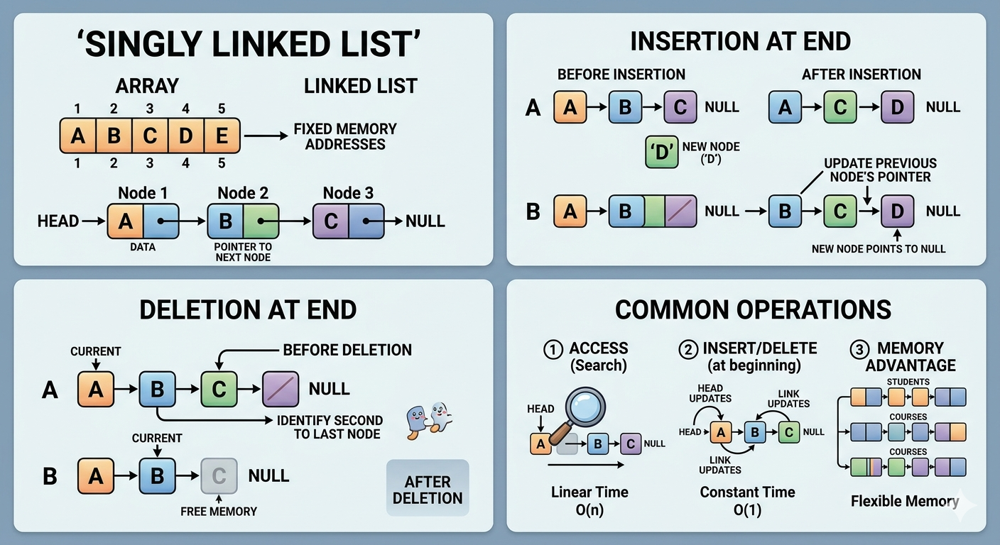
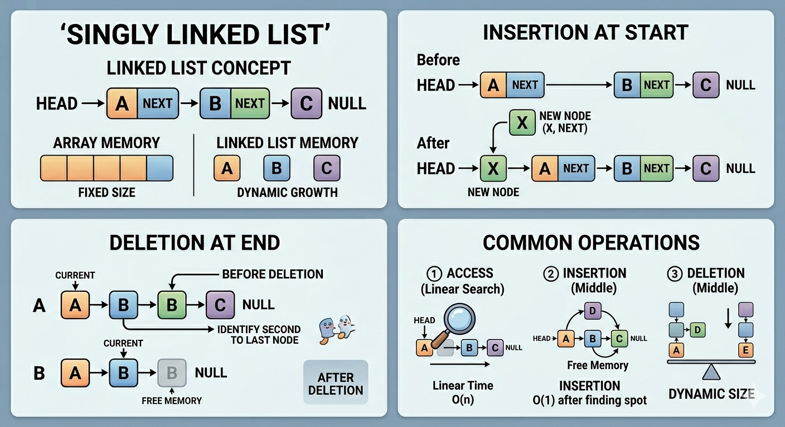

Link List
Link List adalah sebuah struktur data dinamis yang dibuat secara manual. Pada Linked List, data di dalam memori berada di alamat yang berbeda-beda (tidak berurutan secara fisik). Agar data tersebut saling terhubung, setiap elemen memuat informasi tambahan yang menunjuk ke alamat data berikutnya.
Lima elemen utama pada Linked List meliputi:
1. Node: Unit terkecil penyusun list.
2. Head: Penunjuk lokasi node pertama (external reference).
3. Next: Pointer/penunjuk ke node selanjutnya.
4. Data/Value: Nilai yang disimpan di dalam node.
5. None/Nil/Ground: Penunjuk bahwa data tersebut berada di akhir list (tidak ada data berikutnya)
Node → Sebuah node minimal harus menyimpan dua jenis informasi: data (nilai asli) dan next (tujuan node berikutnya).


Implementasi Python:
Kode Program Node
python
class Node:
def __init__(self, init_data):
self.data = init_data
self.next = None
def getData(self):
return self.data
def getNext(self):
return self.next
def setData(self, newdata):
self.data = newdata
def setNext(self, new_next):
self.next = new_next
python
class LinkedList:
def __init__(self):
self.head = None
def isEmpty(self):
return self.head == None
# Menambah data di awal list
def add(self, item):
temp = Node(item)
temp.setNext(self.head)
self.head = temp
# Menghitung jumlah node (Traversal)
def size(self):
current = self.head
count = 0
while current != None:
count = count + 1
current = current.getNext()
return count
# Mencari keberadaan data
def search(self, item):
current = self.head
found = False
while current != None and not found:
if current.getData() == item:
found = True
else:
current = current.getNext()
return found
# Menampilkan semua data ke layar
def display(self):
current = self.head
while current != None:
print(current.getData())
current = current.getNext()
# Menghapus node tertentu
def remove(self, item):
current = self.head
previous = None
found = False
while not found:
if current.getData() == item:
found = True
else:
previous = current
current = current.getNext()
if previous == None:
# Jika yang dihapus adalah node pertama (head)
self.head = current.getNext()
else:
# Jika di tengah atau di akhir
previous.setNext(current.getNext())